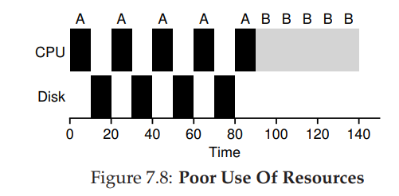
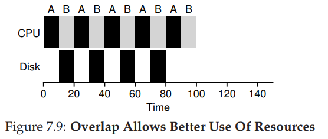
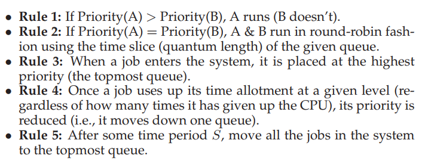

Notes for OSTEP
Operating Systems: Three Easy Pieces
Notes - Part Two
Links to the book: http://pages.cs.wisc.edu/~remzi/OSTEP/
Virtualization
Scheduling: Introduction
How to develop a basic framework for thinking about scheduling policies
-
Workload Assumptions
Before getting into the range of possible policies, let us first make a number of simplifying assumptions about the process running in the system, sometimes collectively called workload.
- Each job runs for the same amount of time
- All jobs arrive at the same time
- Once started, each job runs to completion
- All jobs only use the CPU (i.e., they perform no I/O)
- The run-time of each job is known
The workload assumptions are mostly unrealistic, but that is alright (for now), because we will relax them as we go, and eventually develop what we will refer to as a fully-operational scheduling discipline.
-
Scheduling Metrics
A metric is just something that we use to measure something. Here we simply use a single metric: turnaround time. The turnaround time of a job is defined as the time at which job completes minus the time at which the job arrived in the system.
It is a performance metric, and another metric of interest is fairness, as measured (for example) by Jain’s Fairness Index. Performance and fairness are often at odds in scheduling.
| FIFO | SJF | STCF / PSJF / SRTF | |
|---|---|---|---|
| non-preemptive | non-preemptive | preemptive | |
| Principle | run the jobs that arrives earlier | runs the shortest job first | runs the jobs has the least time left |
| Timing | a job complete its burst time or switches to waiting state | a job complete its burst time or switches to waiting state | any time a new job arrives (switch to ready state) |
| Problem | convoy effect | convoy effect | |
| Solve | jobs that run for different amounts of time | convoy effect |
A new metric for those demand interactive performance
Now users would sit at a terminal and demand interactive performance from the system as well. And thus, a new metric was born: response time. We define response time as from when the job arrives in a system to the first time it is scheduled.
But STCF and related disciplines are not particularly good for response time. For example, if three jobs arrive at the same time, the third job has to wait for the previous two jobs to run in their entirely before being scheduled just once.
The general technique of amortization is commonly used in systems when there is a fixed cost of some operation. So a new scheduling algorithm, Round-Robin scheduling, is proposed. The basic idea is simple, instead of running jobs to completion, RR runs a job for a time slice (scheduling quantum) and then switch to the next job in the run queue.
The length of the time slice is critical for RR, making it long enough to amortize the cost of switching without making it so long that the system is no longer responsive.
Note that the cost of context switching does not arise solely from the OS actions of saving and restoring a few registers. When program runs, they build up a great deal of state in CPU caches, TLBs, branch prediction, and other on-chip hardware. Switching to another job causes this state to be flushed and new state relevant to the currently-running job to be brought in, which may exact a noticeable performance cost.
RR, with a reasonable time slice, is thus an excellent scheduler if response time is the only metric. But it is indeed one of the worst policies if turnaround time is the metric.
An inherent trade-off:
If you are willing to unfair, you can run shortest jobs to completion, but at the cost of response time;
if you instead value fairness, response time is lower, but at the cost of turnaround time.
Relax Assumption 4: all programs perform I/O.
A scheduler clearly has a decision to make both when a job initiates an I/O request and when the I/O completes.
The scheduler incorporate I/O by treating each CPU burst as a job, the scheduler makes sure process that are “interactive” get run frequently. While those interactive jobs are performing I/O, other CPU-intensive jobs run, thus better utilizing the processor.
Take the STCF scheduler for example, both A and B need 50ms CPU time, but A runs for 10ms and then issues an I/O request whereas B performs no I/O.
| Treating A as a single job | Treating each CPU burst of A as a job |
|---|---|
|  |  |
Relax Assumption 5:
In a general-purpose OS, it usually knows very little about the length of each job. So how can we build an approach that behaves like SJF/STCF without such a priori knowledge?
Scheduling: The Multi-Level Feedback Queue
Basic Rule
The MLFQ has a number of distinct queues, each assigned a different priority level. At any time, a job that is ready to run is on a single queue.
Basic principle of decision:
- Rule 1: if Priority(A) > Priority(B), A runs (B doesn’t)
- Rule 2: if Priority(A) = Priority(B), A & B run in RR
The key to MLFQ scheduling therefore lies in how the scheduler sets priorities. Rather than giving a fixed priority to each job, MLFQ varies the priority of a job based on its observed behavior. For example,
a job repeatedly relinquishes the CPU -> (might be) interactive -> priority high
a job uses the CPU intensively -> reduce its priority
How to change priority
First attempt at a priority adjustment algorithm:
-
Rule 3: when a job enters the system, it is placed at the highest priority (the topmost queue)
-
Rule 4a: if a job uses up an entire time slice while running, its priority is reduced.
-
Rule 4b: if a job gives up the CPU before the time slice is up, it stays at the same priority level.
Problems with current MLFQ
-
Starvation
if there are “too many” interactive jobs in the system, they will combine to consume all CPU time, and thus long-running jobs will never receive any CPU time (they starve).
-
A smart user could rewrite their program to game the scheduler which refers to the idea of doing something sneaky to trick the scheduler into giving you more than your fair share of the resource.
-
A program may change its behavior over time; what was CPU-bound may transition to a phase of interactivity.
-
The priority boost to avoid starvation
- Rule 5: After some time period S, move all the jobs in the system to the topmost queue.
In fact, this new rule solves two problems at once. First, processes are guaranteed not to starve. Second, if a CPU-bound job has become interactive, the scheduler treats it properly once it has received the priority boost.
Of course, the addition of the time period S leads to the obvious question: what should S be set to? If it is set too high, long-running jobs could starve; too slow, and interactive jobs may not get a proper share of the CPU.
Better accounting to avoid gaming of scheduler
The real culprit are rules 4a and 4b, which let a job retain its priority by relinquishing the CPU before the time slice expires.
Rewrite them to be the following single rule:
- Rule 4: Once a job uses up its time allotment at a given level (regardless of how many times it has given up the CPU), its priority is reduced.
Summary
As for how to parameterize a scheduler, there are no easy answers to these questions, and thus only some experience with workloads and subsequent tuning of the scheduler will lead to a satisfactory balance.
Scheduling: Proportional Share
Instead of optimizing for turnaround time or response time, a scheduler might instead try to guarantee that each job obtain a certain percentage of CPU time.
How to share the CPU proportionally?
Not Deterministic - Lottery scheduling
-
Use of randomness
It achieves this probabilistically (but not deterministically) by holding a lottery every time slice. Holding a lottery is straightforward: the scheduler must know how many total tickets there are. The scheduler then picks a winning ticket to determine which process to run.
For example: Process A holds tickets 0 through 74 and process B holds tickets 75 through 99
Then the scheduler choose from 0 - 99 and loads the state of the winning process.
The randomness in lottery scheduling leads to a probabilistic correctness in meeting the desire proportion, but no guarantee.
-
Ticket currency
Currency allows a user with a set of tickets to allocate tickets among their jobs in whatever currency they would like; the system automatically converts said currency into the correct global value.
-
Ticket transfer
With transfers, a process can temporarily hand off its tickets to another process and it is especially useful in a client/server setting.
-
Ticket inflation
With inflation, a process can temporarily raise or lower the number of tickets it owns. (Apply in an environment where a group of processes trust one another)
But the ticket-assignment problem remains open.
While randomness gets us a simple scheduler, it occasionally will not deliver the exact right proportions, especially over short time scales.
Deterministic - Stride scheduling
Each job in the system has a stride, which is inverse in proportion to the number of tickets it has. Every time a process runs, we will increment a counter for it (called its pass value) by its stride to track its global progress. Then pick the process to run that has the lowest pass value so far.
pick client with min pass -> run for quantum -> update pass using stride -> return the client to queue
Disadvantage compared with lottery scheduling
It owns a global state.
Imagine a new job enters in the middle of our stride scheduling, what should its pass value be? If it is set to 0, it will monopolize the CPU.
With lottery scheduling, there is no global state per process; we simply add a new process with whatever tickets it has, update the single global variable to track how many total tickets we have, and go from there.
Linux Completely Fair Scheduler
Goal: to fairly divide a CPU evenly among all competing processes.
It does so through a simple counting-based technique known as virtual runtime. As each process runs, it accumulates vruntime. When a scheduling decision occurs, CFS will pick the process with the lowest vruntime to run next.
How does the scheduler know when to stop the currently running process, and run the next one?
If CFS switches too often, fairness is increased, as CFS will ensure that each process receives its share of CPU even over miniscule time windows, but at the cost of performance (too much context switching).
If CFS switches less often, performance is increased (reduced context switching), but at cost of near-term fairness.
CFS manage the tension above through various control parameters
-
sched_latency(A typical value is 48ms)Determine how long one process should run before considering a switch (effectively determining its time slice but in a dynamic fashion). CFS divides this value by the number (n) of processes running on the CPU to determine the time slice for a process, and thus ensures that over this period of time, CFS will be completely fair.
If there are too many processes running, it leads to too small of a time slice and thus too many context switches.
-
min_granularity(usually set to a value like 6ms)CFS will never set the time slice of a process to less than this value, ensuring that not too much time is spent in scheduling overhead. Although CFS won’t be perfectly fair over the target scheduling latency, it will be close, while still achieving high CPU efficiency.
CFS tracks vruntime precisely which allows a job has a time slice that is not a perfect multiple of the time interrupt interval.
Weighting design (niceness)
The nice level of a process. (can be set anywhere from -20 to +19 with a default of 0. Positive nice value imply lower priority and negative values imply higher priority)
NICE_O_LOAD is a constant default weight of a process.
Using Red-Black Trees
To find the next job to run quickly as soon as possible
CFS only keep running (or runnable) processes in this structure.
Insert / delete job: O( log(n) )
Dealing with I/O and Sleeping processes
CFS handles them by altering the vruntime of a job when it wakes up. Specially, CFS sets the vruntime of that job to the minimum value found in the tree to avoid starvation of other processes.
Summary
No scheduler is a panacea, and fair-share schedulers have their fair share of problems.
- do not particularly mesh well with I/O
- ticket or priority assignment problem
Multiprocessor Scheduling
difference between single-CPU hardware and multi-CPU hardware
The use of hardware caches and exactly how data is shared across multiple processors.
Caches fast memories that hold copies of popular data that is found in the main memory of the system.
Caches are based on the notion of locality.
-
Temporal locality
When a piece of data is accessed, it is likely to be accessed again in the near future
-
Spatial locality
If a program accesses a data item at address x, it is likely to access data item near x as well.
Caching with multiple CPUs is much more complicated. For example, it will cause a general problem - cache coherence
Solution to maintain a cache coherence
Basic solution provided by the hardware: by monitoring memory accesses, hardware can ensure that basically the “right thing” happens and that the view of a single shared memory is preserved.
One way to do this on a bus-based system is to use an old technique known as bus snooping; each cache pays attention to memory updates by observing the bus that connects them to main memory. When a CPU then sees an update for a data item it holds in memory, it will notice the change and either invalidate (remove it from its own cache) its copy or update it (put the new value into its cache).
Synchronization
When accessing / updating shared data items or structures across CPUs, mutual exclusion primitives (such as locks) should likely to be used to guarantee correctness (other approaches, such as building lock-free data structures). But locking will create the problem with regards to performance especially as the number of CPU grows.
Cache affinity
A process, when run on a particular CPU, builds up a fair bit of state in the caches (and TLBs) of the CPU. The next time the process runs, it is often advantageous to run it on the same CPU, as it will run faster if some of its state is already present in the caches on that CPU.
A multiprocessor scheduler should consider cache affinity when making its scheduling decisions, perhaps preferring to keep a process on the same CPU if all at possible.
Single-Queue Scheduling
The most basic approach is to simply reuse the basic framework for single processor scheduling, by putting all jobs that need to scheduled into a single queue; we call this single-queue multiprocessor scheduling (SQMS).
Advantage:
- Simplicity. Not require much work to take an existing pick policy and adapt it to work on more than one CPU.
Disadvantage:
-
Lack of scalability. The developers have to inserted some form of locking into code which greatly reduce performance to ensure correct access to the single queue.
-
Cache affinity
Each CPU simply picks the next job to run from the globally shared queue, each job ends up bouncing around from CPU to CPU, thus doing exactly the opposite of what would make sense from the stand point of cache affinity.
To handle this problem, most SQMS schedulers include some kind of affinity mechanism. One might provide affinity for some jobs, but move others around to balance load.
Multi-Queue Scheduling
Some system opt for multiple queues, e.g., one per CPU. We call it multi-queue multiprocessor scheduling (MQMS)
In MQMS, our basic scheduling framework consists of multiple scheduling queues. Each queue will likely follow a particular scheduling discipline, such as round-robin, though of any algorithm can be used.
When a job enters the system, it is placed on exactly one scheduling queue, according to some heuristic. Then it is scheduled essentially independently.
Advantage:
- Avoiding the problems of information sharing and synchronization found in the single-queue approach
- Inherently more scalable ( lock and cache contention not become a central problem; intrinsically provides cache affinity)
Disadvantage:
- load imbalance
How to deal with load imbalance
By migrating a job from one CPU to another, true load balance can be achieved.
How should the system decide to enact a migration
Work stealing. A queue that is low on jobs will occasionally peek at another queue, to see how full it is. If the target queue is more full than the source queue, the source will steal one or more jobs from the target to help balance load.
However, if you look around at other queues too often, you will suffer from high overhead and have trouble scaling. If you don’t look at other queues very often, you are in danger of suffering from severe load imbalances.
Linux Multiprocessor Schedulers
Both O(1) and CFS use multiple queues, whereas BFS uses a single queue.
O(1) scheduler is a priority-based scheduler (similar to the MLFQ), changing a process’s priority over time and then scheduling those with highest priority in order to meet various scheduling objectives.
CFS, in contrast, is a deterministic proportional-share approach (more like stride scheduling).
BFS, is also proportional-share, but based on a more complicated scheme known as Earliest Eligible Virtual Deadline First (EEVDF).